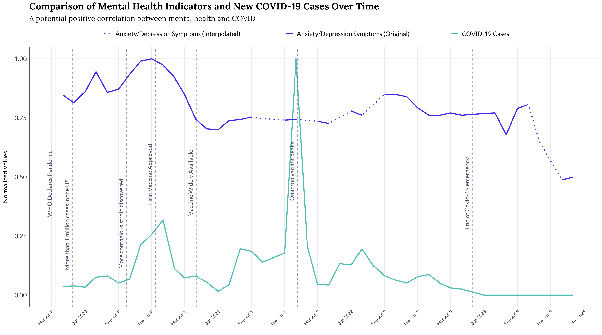

A closer look at COVID-19 cases vs the surveyed mental health indicators
The following data was normalized by dividing each monthly value by the highest value in its dataset to convert the data to a standard scale from 0 to 1 for easy comparison.

- Correlation Peaks: Notable peaks in mental health issues correspond with key COVID-19 milestones, such as the discovery of more contagious strains.
- Vaccination Impact: Mental health indicators showed improvement as vaccines became widely available, although fluctuations persisted with subsequent COVID-19 waves.
- Post-Pandemic Trends: As COVID-19 cases declined and the emergency status ended in 2023, mental health indicators showed a downward trend, suggesting a gradual recovery.
➔
➔